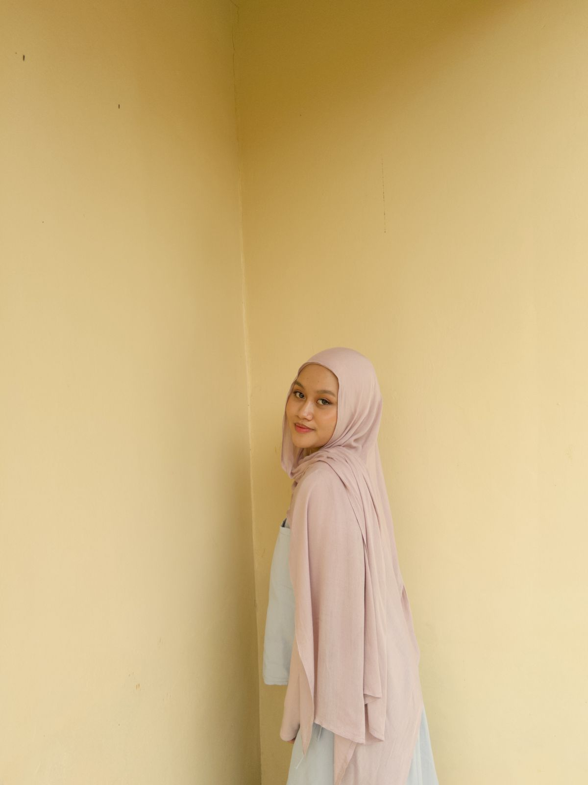

Jl. Jakarta No. 45, Bandung, Jawa Barat
Phone: 085559120939 | Email: zulfasahliyapadila@gmail.com
| PERSONAL DATA | |
|---|---|
| Nama Lengkap | Zulfa Sahliya Padilah |
| NIM | 124005008 |
| Tempat Lahir | Bandung |
| Tanggal Lahir | 10 Februari 2006 |
| Agama | Islam |
| Kewarganegaraan | Indonesia |
| Alamat | Jl. Jakarta No. 45 |
| No. Telepon | 085559120939 |
| zulfasahliyapadila@gmail.com | |
| Program Studi | Teknik Informatika |
| Universitas | Universitas Halim Sanusi |
| Semester | 4 (Empat) |
| PRACTICE ASSIGNMENTS | ||
|---|---|---|
| No. | Assignment Name | Link |
| 1. | Biodata HTML Dasar (Practice 1) | View Project |
| 2. | Survey (Practice 4.2) | View Project |
| 3. | Frame Navigasi (Practice 5) | View Project |